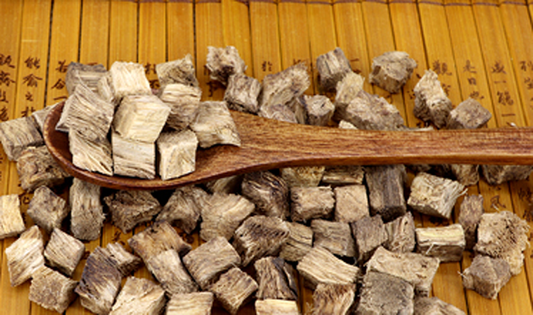
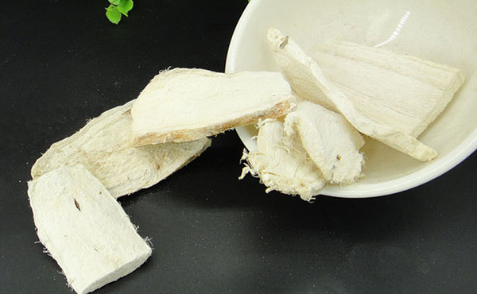
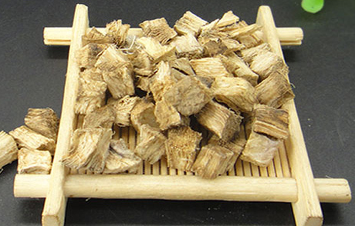

原文连接:https://www.daquan.com/post/11020.html
民间有一种说法，即葛根粉可以丰胸，那么女人每天吃葛根粉好吗，葛根粉是从葛根中提取而来，它性寒、味甘，具有清热解毒、健脾补肾、安神益胃、护肤养颜等功效，那么葛根粉的作用与功效还有哪些呢。
葛根粉的作用
1、祛痘美容
葛根粉可以有效的治疗青春痘，它里面含有丰富的高活性异黄酮，可以调节内分泌失调，服葛根粉以后会让肌肤变得光滑、细腻富有弹性，可以有效治疗脸上的痘痘、雀斑以及各种皮肤疹，同时可减少皱纹，缓解衰老。

针对青春痘的症状，每天将2勺葛根粉倒入容器中，然后加入适量的温水，搅拌均匀，直至颗粒融化，然后取少量敷在脸上的患处，然后将剩下的葛根粉水用开水冲，搅拌成透明状态，每天坚持涂抹在患处，约10-15天脸上的痘痘会逐渐消失，皮肤变得晶莹剔透，白洁无暇。
2、丰胸美体
葛根粉有丰胸的作用，葛根粉里面含有的异黄酮具有促进乳腺二次发育的功能，刺激乳腺及腺泡，可以有效的引导其他部分的脂肪向胸部聚拢，从而起到丰胸的作用，正值发育期的人群使用效果更佳。
3、止泻醒酒

空腹饮酒或者过量饮酒对人体的胃部刺激很大，如果在饮酒前服用葛根粉，可以在胃部形成一道保护层，减少酒精对胃部的刺激和上海，同时具有排毒解酒的功效，对于脾胃虚弱腹泻的症状也有治疗作用。
4、增强记忆力
葛根粉的提取物具有对抗东度警碱所致的记显碍，治疗学习记忆力障碍的症状，可以有效提高记忆力，医学上应用在老年痴呆症、智力障碍、记忆力差等方面。
5、治发热口渴
葛根粉具有解肌发表的作用，里面含有的丙酮可以使体温恢复正常，可以治疗多种发热症状，对于发热口渴、心烦不安等症状，服用葛根粉可以有效缓解。
葛根粉的功效
1、防癌抗癌

葛根粉里面含有10多种氨基酸和微量元素，它的钙、锌、磷的含量很高，还富含丰富的晒元素，而癌细胞最惧怕的就是晒元素，因此服用葛根粉具有抗癌防癌的功效。
2、降血压
葛根粉具有降高血压的功效，葛根粉是由葛根提炼而成，葛根里面含有的葛根素具有扩张冠状动脉、脑动脉的作用，可以很好的降低血压，同时具有增加缺血组织的供血量。
3、降低胆固醇
葛根粉还具有降低胆固醇的功效，它能够降低血液粘度，从而抑制血小板的凝聚，加快体内的微循环，加速新陈代谢。
4、保护心脏
葛根粉可以降低心肌氧耗量，可以减缓心瘁以及心肌缺血的症状，有效缩小心肌梗塞的范围，抵抗急性的心率失常现象。
葛根粉的副作用与禁忌
1、葛根粉不宜过量服用
过量的服用会导致雌激素过量而引起月经不调、黑斑、子宫疾病、乳腺疾病，甚至心肌梗塞等症状。
2、肠胃虚弱不宜空腹服用

葛根属凉性，肠胃虚寒的人群不要空腹食用，会让肠胃更加虚弱，过量使用会出现冒虚汗、自汗等症状。
3、葛根粉不宜以下食物同服
葛根粉无副作用，但与一些食物相克，和杏仁、乌头类药物会引起身体不适，乌头类药物所含的乌头碱与葛根里面的异黄酮相克。另外食用葛根粉期间，以下食物禁用，如：酒、可乐，咖啡、浓茶、辣椒、生姜、大蒜、韭菜、狗肉、羊肉、香菜、芹菜等辛辣温热的食品，会影响服用效果。
结语：女性吃葛根粉具有丰胸养颜的功效，还可以增强人体的免疫力，可以延缓衰老，里面含有的雌激素还可以有效激活卵巢，但也要了解葛根粉的禁忌，希望您可以合理使用葛根粉。